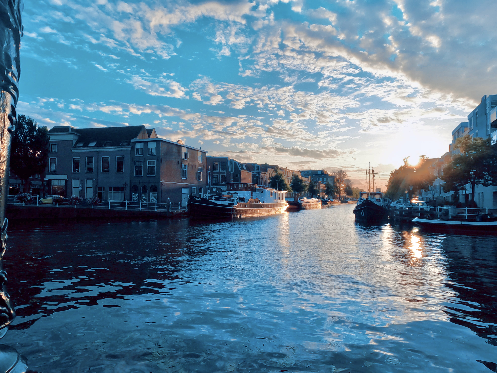
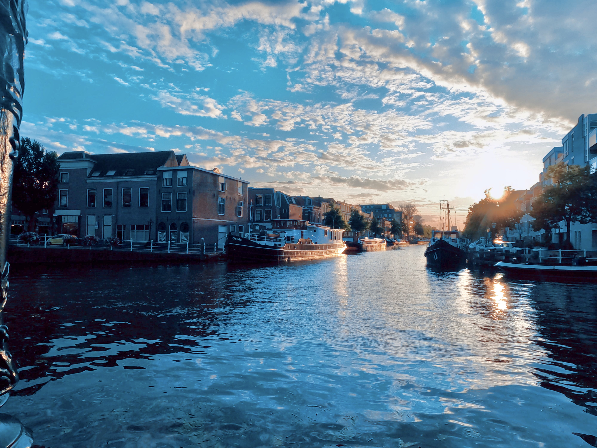
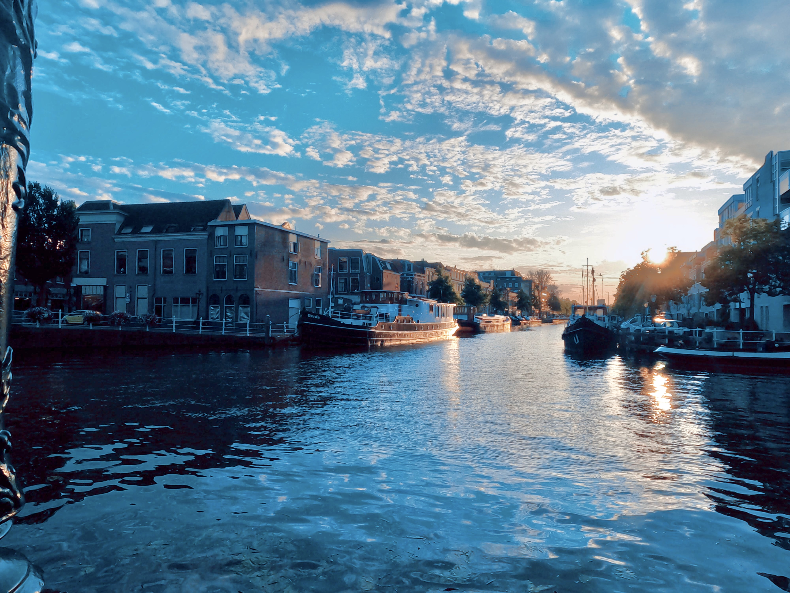

Zusätzlich liebe ich Kunst und Theater, da sie meine kulturelle Vielfalt bereichern und mein Verständnis für die künstlerische Ausdrucksform vertiefen.
Und schließlich, in der digitalen Welt, umarme ich die Webentwicklung als meine neueste Leidenschaft. Hier kann ich meine Kreativität in die virtuelle Realität übertragen und innovative Lösungen schaffen, die die Art und Weise, wie wir online interagieren, verbessern.
Neben meinen Wanderabenteuern praktiziere ich Yoga, um meine innere Balance zu stärken. Während ich die Energie der Umgebung in mich aufnehme, finde ich Ruhe und Harmonie in meiner Seele.
Meine Leidenschaft für das Entdecken führt mich auf abenteuerliche Reisen in ferne Länder. Diese Reisen erweitern meinen Horizont, befriedigen meine Neugierde und bringen mich in Kontakt mit verschiedenen Kulturen. Es ist meine Art, die Vielfalt und Schönheit der Welt zu schätzen und zu verstehen.
In ruhigen Momenten finde ich Erfüllung in der kunstvollen Gestaltung von Makramee-Dekorationen. Mit meinen eigenen Händen kreiere ich einzigartige Stücke, die die Schönheit der Natur in meine Umgebung bringen und einen Hauch von Kreativität in mein Leben einbringen.
Bücher sind meine treuen Begleiter, und die Klänge der Musik bilden den Soundtrack meiner Tage. Sie bieten mir Fluchtmöglichkeiten, Inspiration und tiefe Einblicke in verschiedene Welten und Kulturen
Darüber hinaus glaube ich an das Geben zurück. In meiner Freizeit engagiere ich mich leidenschaftlich für den Naturschutz, um das zu schützen, was mich inspiriert und so viele Menschen auf der Welt berührt.
Kochen ist für mich nicht nur eine Notwendigkeit, sondern eine kreative Ausdrucksform. Neue Geschmacksrichtungen zu erkunden und in der Küche zu experimentieren, ist für mich eine Reise für die Sinne und eine Möglichkeit, meine Kreativität auszuleben.
Meine Hobbys und Interessen spiegeln meine tiefe Liebe zur Natur und meine Leidenschaft für das Entdecken wider. Wenn ich in den majestätischen Gebirgen und dichten Wäldern wandere, empfinde ich nicht nur eine tiefe Verbundenheit mit den Elementen, sondern finde auch inneren Frieden. Die unberührte Natur ist für mich eine Quelle der Inspiration und ein Ort, an dem ich mich lebendig fühle.
